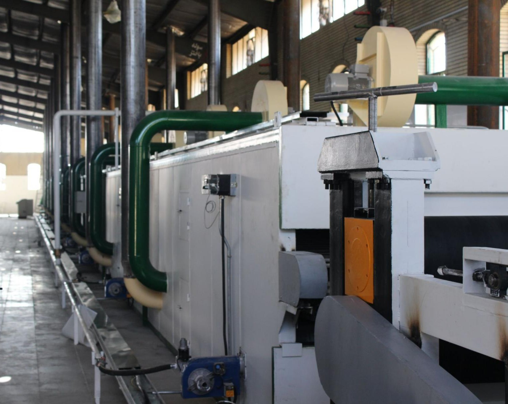

نمونهی آموزشی فرضی
فلاف پالپ
خط تولید فلاف پالپ از کجا شروع میشود؟
پیش از انتخاب ماشینآلات، باید محصول موردنظر، مادهی اولیه و محدودیتهای پروژه را روشن کرد.

همهی نوشتهها
مطالب این صفحه نمونههای فرضی برای نمایش ساختار وبلاگ هستند.
تصاویر بندانگشتی از آرشیو سایت هستند و به مقاله یا پروژهی مشخصی نسبت داده نمیشوند.
۴ نوشته
خط تولید فلاف پالپ از کجا شروع میشود؟
چند پرسش پایه برای روشنکردن نیاز پروژه و شروع ارزیابی خط.
چطور مادهی اولیه را در ارزیابی خط در نظر بگیریم؟
از ویژگیهای خوراک تا دسترسی و آمادهسازی؛ نکاتی برای صورتبندی پرسشها.
پیش از ارزیابی ماشینآلات چه اطلاعاتی آماده کنیم؟
فهرستی کوتاه از اطلاعات پروژه که گفتوگوی فنی را دقیقتر میکند.
برای ارزیابی خمیر از باگاس چه پرسشهایی مطرح است؟
موضوعاتی برای ثبت دربارهی خوراک، نیاز محصول و دادههای در دسترس پروژه.
مقالهای با این عبارت و موضوع پیدا نشد. عبارت جستوجو یا دستهبندی را تغییر دهید.